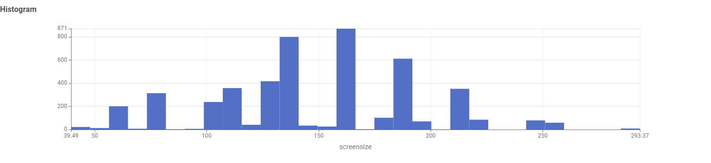

TV Data Story & Insights
Communicating data insights regarding television screen sizes, display technology, and energy trends.
TV Market Trends: Size Preference & Display Technology
As television technology advances, consumer preferences have shifted toward larger screen sizes. This data story examines current market offerings to analyze how screen size distribution and display technologies shape energy consumption patterns across modern appliances.
1. Screen Size Distribution & Market Demand

Key Finding: The screen size distribution is heavily skewed toward larger dimensions, with major clusters at 135 cm (~53"), 165 cm (~65"), and 185 cm (~73"). Smaller models under 100 cm represent a significantly smaller portion of current market listings.
Insight: The concentration around 55"–75" screens indicates that manufacturers and retailers are focusing on living room setups, where higher energy consumption is often standard due to larger surface area illumination.
2. Display Technology Across Size Categories

Key Finding: LCD (LED) remains the dominant display technology across all screen size tiers due to its lower manufacturing cost, while OLED is almost exclusively reserved for medium and large screen categories.
Insight: Because OLED panels offer superior contrast but can consume variable power based on content brightness, buyers choosing larger screens face a direct tradeoff between display technology efficiency and screen area power demands.
Summary Takeaway
When purchasing a television, screen size is the single largest factor driving overall energy consumption. While LED technology provides energy efficiency across all size ranges, opting for larger OLED models significantly increases potential energy costs over the appliance's lifespan.